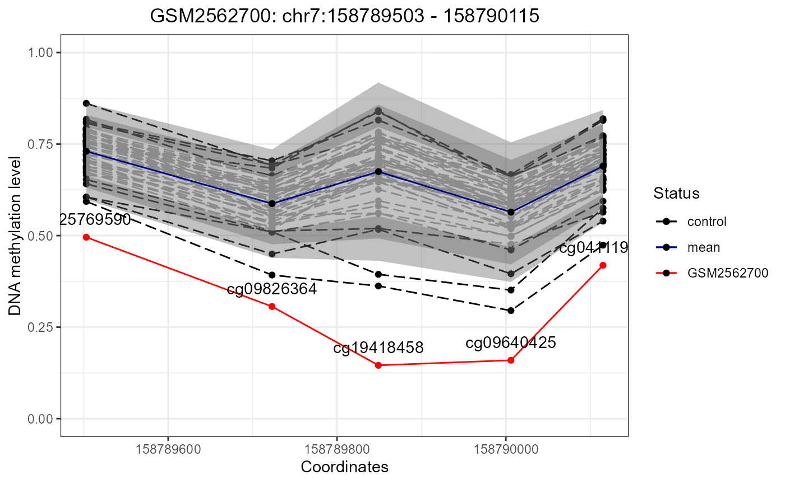
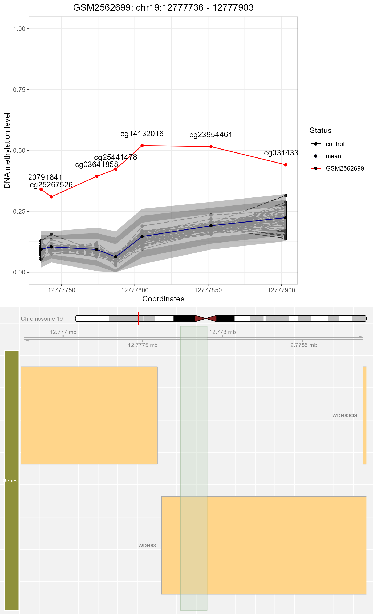
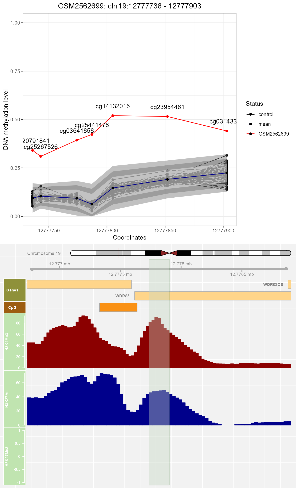

The epimutacions User's Guide
Leire Abarrategui
Bioinformatics Research Group in Epidemiology (BRGE)Barcelona Insitute for Global Health (ISGlobal)Faculty of Medical Sciences, Newcastle UniversityAutonomous University of Barcelona (UAB)leire.abarrategui-martinez@newcastle.ac.uk
Carles Hernandez-Ferrer
Centro Nacional de Análisis Genómico (CNAG-CRG), Center for Genomic RegulationBarcelona Institute of Science and Technology (BIST)carles.hernandez@cnag.crg.eu
Carlos Ruiz-Arenas
Centro de Investigación Biomédica en Red de Enfermedades Raras (CIBERER)Universitat Pompeu Fabra (UPF)carlos.ruiza@upf.edu
Juan R. Gonzalez
Bioinformatics Research Group in Epidemiology (BRGE),Barcelona Insitute for Global Health (ISGlobal)Department of Mathematics, Autonomous University of Barcelona (UAB)juanr.gonzalez@isglobal.org
2022-11-12
epimutacions_cast.RmdAbstract
Las epimutaciones son alteraciones raras en el patrón de
metilación de un loci específico. Aunque se sabe que pueden ser la
causa de algunas enfermedades genéticas, no existen métodos
estandarizados para detectarlas y cuantificarlas. Esta vignette es
una guía introductoria del paquete epimutacions. El
paquete incluye varios métodos de detección de outliers para
identificar epimutaciones en datos genómicos de metilación de ADN
provenientes de microarray. Las áreas que cubre este documento
son: (1) instalación del paquete; (2) carga y preprocesamiento de
los datos; y (3) identificación, anotación y visualización de las
epimutaciones.
Introducción
Background
Previamente al desarrollo de este paquete, existían dos enfoques distintos a la hora de abordar la detección de epimutaciones en datos de metilación de microarray: (1) primero identificar CpGs individualescon valores outlier y después clusterizarlos en epimutaciones (Barbosa et al. 2018); (2) primero definir regiones candidatas con el algoritmo bumphunter y después testear la significancia estadística con un MANOVA (Aref-Eshghi et al. 2019). Aunque estos dos métodos han sido definidos y usados, no están disponibles de manera pública y nunca se han comparado sus rendimientos.
Por eso, hemos desarrollado el paquete de R/Bioconductor
epimutacions, que implementa estos dos enfoques (llamados
quantile y manova respectivamente) además de 4
métodos adicionales. El primero, llamado beta, sigue la
línea del primer enfoque pero usa una distribución específica a la hora
de detectar los outliers. Los otros 3, llamados mlm,
mahdist e iForest, siguen el segundo enfoque
pero aplican métodos distintos para evaluar la significancia estadística
de las regiones.
Además, el paquete epimutacions proporciona herramientas
para la normalización de los datos crudos de metilación de ADN de
microarray, así como para la visualización y anotación de las
epimutaciones.
Metodología
EL paquete epimutacions lleva a cabo un análisis
genómico de metilación de ADN para identificar epimutaciones que podrían
ser consideradas como biomarcadores en aquellos pacientes que se
sospeche que pueden estar sufriendo alguna enfermedad genética.
Para estudios con un diseño caso-control, se debe usar la función
epimutacions que compara cada muestra caso contra un panel
de referencia (individuos sanos). Si por el contrario, sólo se dispone
de muestras caso, se debe usar la función
epimutations_one_leave_out(), que compara cada muestra caso
contra todas las demás, que se usan como control. Independientemente de
la función que usemos, podremos aplicar cualquiera de los métodos
anteriormente mencionados, que son: (1) Análisis Multivariado de
Varianza (manova), (2) Modelo Lineal Multivariante
(mlm), (3) Isolation Forest (iForest), (4)
Distancia robusta de Mahalanobis (mahdist) (5)
quantile y (6) beta.
Los métodos quantile y beta comparan los
valores de metilación de cada CpG con la referencia y después
clusterizan los significativos en epimutaciones. Para indentificar los
CpG outliers, quantile usa un sliding window, mientras que
beta aplica una distribución beta. Definimos una
epimutación como una ventana consecutiva de al menos 3 CpGs outliers con
una distancia máxima entre ellos de 1kb (Barbosa
et al. 2018).
Por otro lado, manova, mlm,
iForest y mahdist definen primero las regiones
candidatas (regiones diferencialmente metiladas (DMRs)) con el algoritmo
bumphubter(Jaffe et al. 2012) y después
comprueban si en estas DMRs hay suficientes CpGs outliers.
Implementation of each outlier detection method
Setup
Instalación de los paquetes
Necesitamos instalar epimutacions y
epimutacionsData
if (!requireNamespace("BiocManager", quietly = TRUE))
install.packages("BiocManager")
BiocManager::install("epimutacions")
BiocManager::install("epimutacionsData")Inicio Rápido
La figura @ref(fig:workflow) explica los principales análisis del paquete.
En líneas generales, podemos proporcionar dos tipos de input:
- Objeto
GenomicRatioSetcon todos los individuos (sólo casos o casos + controles).
- Objeto
- Datos crudos de casos + Panel de referencia. Los casos como ficheros
IDATy el panel de referencia, bien como un objetoRGChannelSeto bien seleccionando alguno de los que el paquete proporciona como ejemplo (section @ref(datasets)). Después deberemos hacer un preprocesamiento con la funciónepi_preprocess()para obtener un objetoGenomicRatioSet.
- Datos crudos de casos + Panel de referencia. Los casos como ficheros
El objeto GenomicRatioSet es el que se usa como input de
las funciones principales epimutations() (para estudios
caso-control) o epimutations_one_leave_out() (para estudios
con sólo casos).
Allowed data formats, normalization and input types
Dataset
El paquete contiene un dataset de prueba llamado methy.
Se trata de un objeto GenomicRatioSet que incluye 49
controles (GEO:
GSE104812) y 3 casos (GEO:
GSE97362).
Podemos acceder al dataset de la siguiente manera:
library(ExperimentHub)
eh <- ExperimentHub()
query(eh, c("epimutacionsData"))ExperimentHub with 3 records
# snapshotDate(): 2022-04-26
# $dataprovider: GEO, Illumina 450k array
# $species: Homo sapiens
# $rdataclass: RGChannelSet, GenomicRatioSet, GRanges
# additional mcols(): taxonomyid, genome, description,
# coordinate_1_based, maintainer, rdatadateadded, preparerclass,
# tags, rdatapath, sourceurl, sourcetype
# retrieve records with, e.g., 'object[["EH6690"]]'
title
EH6690 | Control and case samples
EH6691 | Reference panel
EH6692 | Candidate epimutations
methy <- eh[["EH6690"]]A parte, tenemos un GenomicRatioSet que sólo contiene
muestras de casos, lo podemos cargar así:
data(GRset)Preprocesamiento
Cómo nuestros datos ya están preprocesados, este paso no hará falta.
Si tuviesemos datos crudos, la función epi_preprocess()
permite usar cualquiera de los 6 métodos de prepocesamiento del paquete
minfi. Para ello, debemos tener todos los ficheros
IDAT en un mismo directorio.a función se usa de la
siguiente manera:
Dataset_procesado <- epi_preprocess(directorio,
panel_referencia,
pattern = "SampleSheet.csv")Epimutations
Detección de epimutaciones
Diseño caso-control
Primero usaremos el dataset methy (section @ref(methy))
que contiene muestras de casos y controles. Por lo tanto, usaremos la
función epimutations. Podemos escoger cualquiera de los 6
métodos implementados en el paquete: (1) Análisis Multivariado de
Varianza (manova), (2) Modelo Lineal Multivariante
(mlm), (3) Isolation Forest (iForest), (4)
Distancia robusta de Mahalanobis (mahdist) (5)
quantile y (6) beta.
Para empezar, cogemos el dataset y separamos los casos de los controles:
case_samples <- methy[,methy$status == "case"]
control_samples <- methy[,methy$status == "control"]Usaremos el método manova. Si quisiéramos, podríamos
especificar el cromosoma o la región a analizar para reducir el tiempo
de ejecución:
epi_mvo <- epimutations(case_samples,
control_samples,
method = "manova")Diseño sólo casos
Para analizar el dataset que sólo contiene muestras de casos
GRset, usaremos la función
epimutations_one_leave_out(). En este caso no hace falta
dividir el dataset, simplemente corremos la función:
epi_mva_one_leave_out<- epimutations_one_leave_out(GRset,
method = 'manova')Parámetros
Cada método de detección tiene sus propios parámetros. Los podemos
modificar mediante la función epi_parameters(). Si la
corremos sin argumentos, nos muestra una lista de los parámetros por
defecto:
$manova
$manova$pvalue_cutoff
[1] 0.05
$mlm
$mlm$pvalue_cutoff
[1] 0.05
$iForest
$iForest$outlier_score_cutoff
[1] 0.7
$iForest$ntrees
[1] 100
$mahdist
$mahdist$nsamp
[1] "deterministic"
$quantile
$quantile$window_sz
[1] 1000
$quantile$offset_abs
[1] 0.15
$quantile$qsup
[1] 0.995
$quantile$qinf
[1] 0.005
$beta
$beta$pvalue_cutoff
[1] 1e-06
$beta$diff_threshold
[1] 0.1Los nombres de los parámetros modificables se encuentran en esta tabla:
| Parámetros | Descripción |
|---|---|
| Manova, mlm | |
| pvalue_cutoff | El p-valor umbral para determinar qué regiones CpG son outliers |
| iso.forest | |
| outlier_score_cutoff | El umbral para determinar qué regiones CpG son outliers |
| ntrees | El número de árboles binarios que se deben construir para el modelo |
| mahdist.mcd | |
| nsamp | El número de subgrupos usados para las estimaciones iniciales del MCD |
| quantile | |
| window_sz | La distancia máxima entre CpGs para que se consideren dentro de la misma DMR |
| offset_mean/offset_abs | El umbral superior e inferior para considerar un CpG como outlier |
| beta | |
| pvalue_cutoff | El p-valor mínimo para considerar un CpG como outlier |
| diff_threshold | La diferencia de metilación mínima entre el CpG y la media para considerar una posición como outlier |
Si quisiéramos cambiar algun parámetro, se puede hacer utilizando los argumentos que vemos en la tabla. Por ejemplo, para modificar el p-valor de corte de manova:
parameters <- epi_parameters(manova = list("pvalue_cutoff" = 0.01))
parameters$manova$pvalue_cutoff[1] 0.01Descripción de los resultados:
Las funciones epimutations y
epimutations_one_leave_out() devuelven un data frame con
todas las epimutaciones que se hayan detectado y los siguientes
argumentos:
| Column name | Description |
|---|---|
epi_id |
Nombre sistemático de cada una de las epimutaciones detectadas |
sample |
Nombre de la muestra en la que se ha encontrado la epimutación |
chromosome start end
|
La localización de la epimutación |
sz |
La medida de la ventana |
cpg_ids |
El número de CpGs en la epimutación |
cpg_n |
Los nombres de los CpGs de la epimutación |
outlier_score |
En el método manova proporciona la aproximación al
F-test y el score de Pillai, separados por /En el método mlm proporciona la aproximación al F-test y la R2
del modelo, separados por /En el método iForest proporciona la magnitud del score del outlier.En el método beta proporciona la media de p-valores de los
CpGs de la DMR en cuestión.En los métodos quantile y
mahdist se rellena con NA. |
pvalue |
En los métodos manova y mlm proporciona el
p-valor obtenido del modeo.En los métodos quantile,
iForest, beta y mahdist se
rellena con NA. |
outlier_direction |
Indica la dirección del outlier con “hypomethylation” y
“hypermethylation”. En manova, mlm,
iForest, y mahdist se calcula a partir de los
valores obtenidos de bumphunter.En beta
se calcula con el p-valor de cada CpG usando diff_threshold
y pvalue_threshold.En quantile se calcula
a partir de la localización de la muestra en la distribución de la
referencia (outlier por la derecha vs. outlier por la izquierda). |
adj_pvalue |
En los métodos manova y mlm proporcinoa el
p-valor ajustado con Benjamini-Hochberg basado en el número total de
regiones detectadas por bumphunter.En los métodos quantile, iForest, mahdist y
beta se rellena con NA. |
epi_region_id |
Nombre de la epimutación tal y como esté definido en
candRegsGR. |
CRE |
cREs (cis-Regulatory Elements) definidos por ENCODE que se superponen con la región de la epimutación. |
CRE_type |
Tipos de cREs (cis-Regulatory Elements) definidos por ENCODE. |
A modo de ejemplo, vamos a visualizar los resultados que hemos
obtenido con el método ANOVA y la función epimutations
(diseño caso-control) - (epi_mvo):
dim(epi_mvo)[1] 51 16
class(epi_mvo)[1] "tbl_df" "tbl" "data.frame"
head(as.data.frame(epi_mvo), 12) epi_id sample chromosome start end sz cpg_n
1 epi_manova_1 GSM2562699 chr19 12777736 12777903 167 7
2 epi_manova_2 GSM2562699 chr7 90895894 90896701 807 4
3 epi_manova_3 GSM2562699 chr7 27186993 27187691 698 11
4 epi_manova_4 GSM2562699 chr19 12758416 12759156 740 6
5 epi_manova_5 GSM2562699 chr7 31006 31497 491 6
6 epi_manova_6 GSM2562699 chr7 5271480 5271655 175 4
7 epi_manova_7 GSM2562699 chr7 1080558 1081068 510 4
8 epi_manova_8 GSM2562699 chr7 1209495 1209742 247 3
9 epi_manova_9 GSM2562699 chr7 1003645 1003750 105 3
10 epi_manova_10 GSM2562699 chr8 144810034 144810657 623 3
11 epi_manova_11 GSM2562699 chr19 44278274 44278628 354 3
12 epi_manova_12 GSM2562699 chr19 44285297 44285568 271 3
cpg_ids
1 cg20791841,cg25267526,cg03641858,cg25441478,cg14132016,cg23954461,cg03143365
2 cg08714590,cg01480180,cg21104276,cg17497608
3 cg23129930,cg05928186,cg06237983,cg04265576,cg12810523,cg03529432,cg22469274,cg17994139,cg14044640,cg09936824,cg12110087
4 cg21535253,cg17737967,cg18339718,cg00422699,cg12063490,cg18530645
5 cg00725145,cg16080333,cg23568068,cg05107246,cg15535638,cg20044143
6 cg26660312,cg00579868,cg09203501,cg00393985
7 cg03916490,cg12581298,cg22785556,cg24352561
8 cg03188948,cg18402987,cg23708337
9 cg08735705,cg12575883,cg07930192
10 cg25468618,cg01399317,cg13735469
11 cg03731131,cg11624345,cg22904711
12 cg15977816,cg01424145,cg14066757
outlier_score outlier_direction pvalue
1 302.558383959434/0.981008923520811 hypermethylation 3.441085e-33
2 27.7048116720887/0.715797609527385 hypomethylation 1.598679e-11
3 7.56010313828286/0.692080137662987 hypermethylation 1.297922e-06
4 5.8752838326799/0.456322665118055 hypermethylation 1.624372e-04
5 6.59037882739006/0.484929736771414 hypomethylation 5.827320e-05
6 7.33624119121713/0.400095151166048 hypermethylation 1.285674e-04
7 816.680878011864/0.986709853649848 hypomethylation 1.185295e-40
8 17.011266584818/0.531414979777337 hypermethylation 1.581504e-07
9 9.18210526711306/0.379706612211322 hypermethylation 7.468475e-05
10 8.02826408750705/0.348626542452343 hypomethylation 2.159693e-04
11 22.1696264146171/0.596444692968419 hypomethylation 5.786402e-09
12 12.7571508182161/0.4595987139229 hypermethylation 3.659987e-06
adj_pvalue delta_beta epi_region_id
1 2.236705e-31 0.2960902 chr19_12776725
2 1.023154e-09 0.4637789 chr7_90892836
3 7.917322e-05 0.1546873 chr7_27186554
4 9.096482e-03 0.2333481 chr19_12758416
5 3.438119e-03 0.1965240 chr7_31006
6 7.328345e-03 0.2721079 chr7_5270512
7 7.822945e-39 0.2639854 chr7_1080473
8 9.805325e-06 0.3103321 chr7_1209495
9 4.331715e-03 0.2275538 chr7_1003645
10 1.187831e-02 0.1879683 chr8_144807941
11 3.645433e-07 0.1870679 chr19_44277951
12 2.195992e-04 0.1488268 chr19_44285297
CRE
1 EH38E1939817,EH38E1939818,EH38E1939819
2 EH38E2570884,EH38E2570885,EH38E2570886,EH38E2570887,EH38E2570888,EH38E2570889,EH38E2570890,EH38E2570891,EH38E2570892,EH38E2570893,EH38E2570894
3 EH38E2542602,EH38E2542603,EH38E2542604,EH38E2542605,EH38E2542606,EH38E2542608,EH38E2542601,EH38E2542607
4 EH38E1939806,EH38E1939807,EH38E1939808
5
6 EH38E2531316,EH38E2531317,EH38E2531318,EH38E2531319,EH38E2531320
7 EH38E2528180,EH38E2528182,EH38E2528181
8 EH38E2528328
9 EH38E2528080,EH38E2528081,EH38E2528082,EH38E2528083,EH38E2528084,EH38E2528085
10 EH38E2675494,EH38E2675495,EH38E2675489
11 EH38E1956415,EH38E1956416
12 EH38E1956428,EH38E1956429
CRE_type
1 pELS;pELS,CTCF-bound;PLS,CTCF-bound
2 pELS,CTCF-bound;pELS,CTCF-bound;pELS,CTCF-bound;PLS,CTCF-bound;pELS,CTCF-bound;pELS,CTCF-bound;pELS,CTCF-bound;pELS,CTCF-bound;dELS,CTCF-bound;dELS,CTCF-bound;dELS,CTCF-bound
3 PLS,CTCF-bound;pELS;PLS;pELS,CTCF-bound;pELS,CTCF-bound;pELS;PLS;pELS
4 pELS,CTCF-bound;pELS,CTCF-bound;PLS,CTCF-bound
5
6 dELS;dELS,CTCF-bound;dELS,CTCF-bound;dELS,CTCF-bound;dELS,CTCF-bound
7 dELS,CTCF-bound;dELS;dELS,CTCF-bound
8 dELS,CTCF-bound
9 dELS;dELS,CTCF-bound;dELS,CTCF-bound;dELS,CTCF-bound;dELS,CTCF-bound;dELS,CTCF-bound
10 dELS;dELS,CTCF-bound;dELS,CTCF-bound
11 dELS;dELS,CTCF-bound
12 PLS,CTCF-bound;pELS epi_id cpg_n pvalue adj_pvalue
10 epi_manova_10 3 2.159693e-04 1.187831e-01
11 epi_manova_11 3 5.786402e-09 3.645433e-06
12 epi_manova_12 3 3.659987e-06 2.195992e-03
13 epi_manova_13 3 8.670808e-04 4.682236e-01
14 epi_manova_14 11 1.383286e-07 1.037465e-04
15 epi_manova_15 5 2.107632e-05 1.454266e-02
kableExtra::kable(
epi_mvo[ 9, c(1,2, 7, 10,11,12)],
row.names = FALSE ) %>% column_spec(1:6, width = "4cm")| epi_id | sample | cpg_n | outlier_direction | pvalue | adj_pvalue |
|---|---|---|---|---|---|
| epi_manova_9 | GSM2562699 | 3 | hypermethylation | 7.47e-05 | 0.0043317 |
epi_mvo[epi_mvo$adj_pvalue>0.02,]
[38;5;246m# A tibble: 6 × 16
[39m
epi_id sample chrom…¹ start end sz cpg_n cpg_ids outli…² outli…³
[3m
[38;5;246m<chr>
[39m
[23m
[3m
[38;5;246m<chr>
[39m
[23m
[3m
[38;5;246m<chr>
[39m
[23m
[3m
[38;5;246m<int>
[39m
[23m
[3m
[38;5;246m<int>
[39m
[23m
[3m
[38;5;246m<int>
[39m
[23m
[3m
[38;5;246m<dbl>
[39m
[23m
[3m
[38;5;246m<chr>
[39m
[23m
[3m
[38;5;246m<chr>
[39m
[23m
[3m
[38;5;246m<chr>
[39m
[23m
[38;5;250m1
[39m epi_ma… GSM25… chr8 1.45
[38;5;246me
[39m8 1.45
[38;5;246me
[39m8 623 3 cg2546… 8.0282… hypome…
[38;5;250m2
[39m epi_ma… GSM25… chr19 8.27
[38;5;246me
[39m6 8.27
[38;5;246me
[39m6 188 3 cg0668… 6.5923… hyperm…
[38;5;250m3
[39m epi_ma… GSM25… chr7 1.55
[38;5;246me
[39m8 1.55
[38;5;246me
[39m8 746 5 cg1193… 5.8710… hyperm…
[38;5;250m4
[39m epi_ma… GSM25… chr7 1.40
[38;5;246me
[39m8 1.40
[38;5;246me
[39m8 312 4 cg0824… 6.0014… hypome…
[38;5;250m5
[39m epi_ma… GSM25… chr21 1.51
[38;5;246me
[39m7 1.51
[38;5;246me
[39m7 731 3 cg1229… 7.2652… hypome…
[38;5;250m6
[39m epi_ma… GSM25… chr19 3.89
[38;5;246me
[39m7 3.89
[38;5;246me
[39m7 523 3 cg0275… 7.5347… hypome…
[38;5;246m# … with 6 more variables: pvalue <dbl>, adj_pvalue <dbl>,
[39m
[38;5;246m# delta_beta <dbl>, epi_region_id <chr>, CRE <chr>, CRE_type <chr>, and
[39m
[38;5;246m# abbreviated variable names ¹chromosome, ²outlier_score,
[39m
[38;5;246m# ³outlier_direction
[39mAnotación de las epimutaciones
La función annotate_epimutations() lleva a cabo un
enriquecimiento de las epimutaciones que se hayan detectado. Aporta
información sobre:
rst_mvo <- annotate_epimutations(epi_mvo, omim = FALSE)| Column name | Description |
|---|---|
GencodeBasicV12_NAME |
Nombres de los genes en GENECODE |
Regulatory_Feature_Group |
Descripción del Methylation Consortium sobre la región reguladora |
Relation_to_Island |
Localización del CpG en relación a la isla de CpGs |
OMIM_ACCOMIM_DESC
|
Número de acceso y descripción de OMIM |
ensembl_reg_idensembl_reg_coordinatesensembl_reg_typeensembl_reg_tissues
|
ID de la región, coordenadas, tipo y tejido, de Ensembl |
Podemos visualizar algunas anotacinoes de la siguiente manera:
kableExtra::kable(
rst_mvo[ c(27,32) ,c("epi_id", "cpg_ids", "Relation_to_Island")],
row.names = FALSE) %>% column_spec(1:3, width = "4cm")| epi_id | cpg_ids | Relation_to_Island |
|---|---|---|
| epi_manova_44 | cg19560927,cg02876326,cg16167052 | N_Shore///N_Shore///Island |
| epi_manova_51 | cg01396855,cg08684893,cg02386644 | N_Shore///N_Shore///N_Shore |
kableExtra::kable(
rst_mvo[ c(4,8,22) , c("epi_id", "OMIM_ACC", "OMIM_DESC")],
row.names = FALSE ) %>% column_spec(1:3, width = "4cm")
kableExtra::kable(
rst_mvo[ c(1:5), c("epi_id", "ensembl_reg_id", "ensembl_reg_type")],
row.names = FALSE ) %>% column_spec(1:3, width = "4cm")| epi_id | ensembl_reg_id | ensembl_reg_type |
|---|---|---|
| epi_manova_1 | ENSR00000287480 | Promoter |
| epi_manova_2 | ENSR00000215007 | Promoter |
| epi_manova_3 | ENSR00000325316 | Promoter |
| epi_manova_4 | ENSR00001156259///ENSR00001156260 | Promoter///CTCF Binding Site |
| epi_manova_5 | ENSR00000324412 | CTCF Binding Site |
kableExtra::kable(
rst_mvo[ c(1:5), c("GencodeBasicV12_NAME", "epi_id", "ensembl_reg_id", "ensembl_reg_type")],
row.names = FALSE ) %>% column_spec(1:3, width = "4cm")| GencodeBasicV12_NAME | epi_id | ensembl_reg_id | ensembl_reg_type |
|---|---|---|---|
| MAN2B1;MAN2B1;WDR83;WDR83 /// MAN2B1;MAN2B1;WDR83;WDR83 /// WDR83;MAN2B1;MAN2B1;WDR83 /// WDR83;MAN2B1;MAN2B1;WDR83 /// WDR83;MAN2B1;MAN2B1;WDR83 /// MAN2B1;MAN2B1;WDR83 /// MAN2B1;MAN2B1;WDR83 | epi_manova_1 | ENSR00000287480 | Promoter |
| FZD1;FZD1 /// FZD1;FZD1 /// FZD1;FZD1 | epi_manova_2 | ENSR00000215007 | Promoter |
| HOXA6;HOXA-AS3;HOXA-AS3;HOXA-AS3;HOXA6;HOXA3;HOXA-AS3;HOXA-AS3 /// HOXA6;HOXA-AS3;HOXA6;HOXA-AS3;HOXA-AS3;HOXA3;HOXA-AS3;HOXA-AS3 /// HOXA6;HOXA-AS3;HOXA6;HOXA-AS3;HOXA6;HOXA3;HOXA-AS3;HOXA-AS3 /// HOXA6;HOXA-AS3;HOXA6;HOXA-AS3;HOXA6;HOXA3;HOXA-AS3;HOXA-AS3 /// HOXA6;HOXA-AS3;HOXA-AS3;HOXA6;HOXA3;HOXA-AS3;HOXA-AS3 /// HOXA6;HOXA-AS3;HOXA-AS3;HOXA6;HOXA3;HOXA-AS3;HOXA-AS3 /// HOXA6;HOXA-AS3;HOXA-AS3;HOXA6;HOXA3;HOXA-AS3;HOXA-AS3 /// HOXA6;HOXA-AS3;HOXA-AS3;HOXA6;HOXA3;HOXA-AS3;HOXA-AS3 /// HOXA6;HOXA-AS3;HOXA-AS3;HOXA6;HOXA3;HOXA-AS3;HOXA-AS3 | epi_manova_3 | ENSR00000325316 | Promoter |
| MAN2B1 | epi_manova_4 | ENSR00001156259///ENSR00001156260 | Promoter///CTCF Binding Site |
| AC093627.6;AC093627.6 /// AC093627.6;AC093627.6 /// AC093627.6;AC093627.6 /// AC093627.6;AC093627.6 /// AC093627.6;AC093627.6 /// AC093627.6;AC093627.6 | epi_manova_5 | ENSR00000324412 | CTCF Binding Site |
Visualización de las epimutaciones
La función plot_epimutations() dibuja una epimutación en
su contexto genómico, con los valores de metilación del caso en rojo,
los de los controles en líneas negras discontínuas y la media de la
población en azul:
plot_epimutations(as.data.frame(epi_mvo[15,]), methy)
Si ponemos el argumento gene_annot == TRUE, el gráfico
incluye también las anotaciones génicas:
p <- plot_epimutations(as.data.frame(epi_mvo[1,]),
methy = methy,
genes_annot = TRUE)
plot(p)
Para graficar las marcas de cromatina H3K4me3, H3K27me3 y H3K27ac,
especifcamos el argumento regulation = TRUE:
- H3K4me3: comunmente asociada con la activación de la transcripción de genes cercanos.
- H3K27me3: usada en epigenética para detectar genes inactivos.
- H3K27ac: asociada con una gran activación de la transcripción y, por lo tanto, definida con una marca de enhancer activador.
p <- plot_epimutations(as.data.frame(epi_mvo[1,]),
methy = methy,
regulation = TRUE)
plot(p)
Agradecimientos
Los autores quieren dar las gracias al equipo que colaboró en el diseño inicial del paquete en el BioHackaton Europeo de 2020: Lordstrong Akano, James Baye, Alejandro Caceres, Pavlo Hrab, Raquel Manzano y Margherita Mutarelli. Los autores también quieren agradecer el apoyo de la organización del BioHackaton Europeo de 2020.
Todos los miembros del equipo del Project #5 que han conribuido a este paquete:
| Name | Surname | ORCID | Affiliation | Team |
|---|---|---|---|---|
| Leire | Abarrategui | 0000-0002-1175-038X | Faculty of Medical Sciences, Newcastle University, Newcastle-Upon-Tyne, UK; Autonomous University of Barcelona (UAB), Barcelona, Spain | Development |
| Lordstrong | Akano | 0000-0002-1404-0295 | College of Medicine, University of Ibadan | Development |
| James | Baye | 0000-0002-0078-3688 | Wellcome/MRC Cambridge Stem Cell Institute, University of Cambridge, Cambridge CB2 0AW, UK; Department of Physics, University of Cambridge, Cambridge CB2 3DY, UK | Development |
| Alejandro | Caceres | - | ISGlobal, Barcelona Institute for Global Health, Dr Aiguader 88, 08003 Barcelona, Spain; Centro de Investigación Biomédica en Red en Epidemiología y Salud Pública (CIBERESP), Madrid, Spain | Development |
| Carles | Hernandez-Ferrer | 0000-0002-8029-7160 | Centro Nacional de Análisis Genómico (CNAG-CRG), Center for Genomic, Regulation; Barcelona Institute of Science and Technology (BIST), Barcelona, Catalonia, Spain | Development |
| Pavlo | Hrab | 0000-0002-0742-8478 | Department of Genetics and Biotechnology, Biology faculty, Ivan Franko National University of Lviv | Validation |
| Raquel | Manzano | 0000-0002-5124-8992 | Cancer Research UK Cambridge Institute; University of Cambridge, Cambridge, United Kingdom | Reporting |
| Margherita | Mutarelli | 0000-0002-2168-5059 | Institute of Applied Sciences and Intelligent Systems (ISASI-CNR) | Validation |
| Carlos | Ruiz-Arenas | 0000-0002-6014-3498 | Centro de Investigación Biomédica en Red de Enfermedades Raras (CIBERER), Barcelona, Spain; Universitat Pompeu Fabra (UPF), Barcelona, Spain | Reporting |
Session Info
R version 4.2.1 (2022-06-23 ucrt)
Platform: x86_64-w64-mingw32/x64 (64-bit)
Running under: Windows 10 x64 (build 19044)
Matrix products: default
locale:
[1] LC_COLLATE=Spanish_Spain.utf8 LC_CTYPE=Spanish_Spain.utf8
[3] LC_MONETARY=Spanish_Spain.utf8 LC_NUMERIC=C
[5] LC_TIME=Spanish_Spain.utf8
attached base packages:
[1] parallel stats4 stats graphics grDevices utils datasets
[8] methods base
other attached packages:
[1] rtracklayer_1.56.1
[2] IlluminaHumanMethylationEPICanno.ilm10b2.hg19_0.6.0
[3] kableExtra_1.3.4
[4] minfi_1.42.0
[5] bumphunter_1.38.0
[6] locfit_1.5-9.6
[7] iterators_1.0.14
[8] foreach_1.5.2
[9] Biostrings_2.64.1
[10] XVector_0.36.0
[11] SummarizedExperiment_1.26.1
[12] Biobase_2.56.0
[13] MatrixGenerics_1.8.1
[14] matrixStats_0.62.0
[15] GenomicRanges_1.48.0
[16] GenomeInfoDb_1.32.4
[17] IRanges_2.30.1
[18] S4Vectors_0.34.0
[19] ExperimentHub_2.4.0
[20] AnnotationHub_3.4.0
[21] BiocFileCache_2.4.0
[22] dbplyr_2.2.1
[23] BiocGenerics_0.42.0
[24] epimutacions_1.0.3
[25] epimutacionsData_1.0.0
[26] BiocStyle_2.24.0
loaded via a namespace (and not attached):
[1] rappdirs_0.3.3
[2] ragg_1.2.2
[3] tidyr_1.2.1
[4] ggplot2_3.3.6
[5] bit64_4.0.5
[6] knitr_1.40
[7] DelayedArray_0.22.0
[8] data.table_1.14.2
[9] rpart_4.1.16
[10] KEGGREST_1.36.3
[11] RCurl_1.98-1.8
[12] GEOquery_2.64.2
[13] AnnotationFilter_1.20.0
[14] generics_0.1.3
[15] GenomicFeatures_1.48.3
[16] preprocessCore_1.58.0
[17] RSQLite_2.2.16
[18] bit_4.0.4
[19] tzdb_0.3.0
[20] webshot_0.5.3
[21] xml2_1.3.3
[22] httpuv_1.6.5
[23] assertthat_0.2.1
[24] xfun_0.32
[25] hms_1.1.2
[26] jquerylib_0.1.4
[27] evaluate_0.16
[28] promises_1.2.0.1
[29] DEoptimR_1.0-11
[30] fansi_1.0.3
[31] restfulr_0.0.15
[32] scrime_1.3.5
[33] progress_1.2.2
[34] DBI_1.1.3
[35] htmlwidgets_1.5.4
[36] reshape_0.8.9
[37] purrr_0.3.4
[38] ellipsis_0.3.2
[39] dplyr_1.0.9
[40] backports_1.4.1
[41] bookdown_0.29
[42] annotate_1.74.0
[43] biomaRt_2.52.0
[44] deldir_1.0-6
[45] sparseMatrixStats_1.8.0
[46] vctrs_0.4.1
[47] ensembldb_2.20.2
[48] cachem_1.0.6
[49] withr_2.5.0
[50] Gviz_1.40.1
[51] BSgenome_1.64.0
[52] robustbase_0.95-0
[53] checkmate_2.1.0
[54] GenomicAlignments_1.32.1
[55] prettyunits_1.1.1
[56] mclust_5.4.10
[57] svglite_2.1.0
[58] cluster_2.1.3
[59] lazyeval_0.2.2
[60] crayon_1.5.2
[61] genefilter_1.78.0
[62] pkgconfig_2.0.3
[63] labeling_0.4.2
[64] nlme_3.1-157
[65] ProtGenerics_1.28.0
[66] nnet_7.3-17
[67] rlang_1.0.6
[68] lifecycle_1.0.3
[69] filelock_1.0.2
[70] dichromat_2.0-0.1
[71] rprojroot_2.0.3
[72] graph_1.74.0
[73] rngtools_1.5.2
[74] base64_2.0.1
[75] Matrix_1.5-1
[76] Rhdf5lib_1.18.2
[77] base64enc_0.1-3
[78] png_0.1-7
[79] viridisLite_0.4.1
[80] rjson_0.2.21
[81] bitops_1.0-7
[82] rhdf5filters_1.8.0
[83] blob_1.2.3
[84] DelayedMatrixStats_1.18.1
[85] doRNG_1.8.2
[86] stringr_1.4.1
[87] nor1mix_1.3-0
[88] readr_2.1.2
[89] jpeg_0.1-9
[90] scales_1.2.1
[91] memoise_2.0.1
[92] magrittr_2.0.3
[93] plyr_1.8.7
[94] zlibbioc_1.42.0
[95] compiler_4.2.1
[96] BiocIO_1.6.0
[97] RColorBrewer_1.1-3
[98] illuminaio_0.38.0
[99] Rsamtools_2.12.0
[100] cli_3.3.0
[101] htmlTable_2.4.1
[102] Formula_1.2-4
[103] MASS_7.3-57
[104] tidyselect_1.2.0
[105] stringi_1.7.8
[106] textshaping_0.3.6
[107] highr_0.9
[108] yaml_2.3.5
[109] askpass_1.1
[110] latticeExtra_0.6-30
[111] ggrepel_0.9.1
[112] grid_4.2.1
[113] sass_0.4.1
[114] VariantAnnotation_1.42.1
[115] tools_4.2.1
[116] rstudioapi_0.14
[117] foreign_0.8-82
[118] TxDb.Hsapiens.UCSC.hg19.knownGene_3.2.2
[119] gridExtra_2.3
[120] farver_2.1.1
[121] digest_0.6.29
[122] BiocManager_1.30.18
[123] shiny_1.7.2
[124] quadprog_1.5-8
[125] Rcpp_1.0.9
[126] siggenes_1.70.0
[127] BiocVersion_3.15.2
[128] later_1.3.0
[129] OrganismDbi_1.38.1
[130] org.Hs.eg.db_3.15.0
[131] httr_1.4.4
[132] AnnotationDbi_1.58.0
[133] biovizBase_1.44.0
[134] colorspace_2.0-3
[135] rvest_1.0.3
[136] XML_3.99-0.10
[137] fs_1.5.2
[138] splines_4.2.1
[139] RBGL_1.72.0
[140] pkgdown_2.0.6
[141] multtest_2.52.0
[142] systemfonts_1.0.4
[143] xtable_1.8-4
[144] jsonlite_1.8.0
[145] R6_2.5.1
[146] Hmisc_4.7-1
[147] pillar_1.8.1
[148] htmltools_0.5.3
[149] mime_0.12
[150] glue_1.6.2
[151] fastmap_1.1.0
[152] BiocParallel_1.30.3
[153] interactiveDisplayBase_1.34.0
[154] beanplot_1.3.1
[155] codetools_0.2-18
[156] Homo.sapiens_1.3.1
[157] utf8_1.2.2
[158] isotree_0.5.17
[159] lattice_0.20-45
[160] bslib_0.4.0
[161] tibble_3.1.7
[162] curl_4.3.2
[163] GO.db_3.15.0
[164] openssl_2.0.2
[165] interp_1.1-3
[166] survival_3.3-1
[167] limma_3.52.3
[168] rmarkdown_2.16
[169] desc_1.4.1
[170] munsell_0.5.0
[171] rhdf5_2.40.0
[172] GenomeInfoDbData_1.2.8
[173] HDF5Array_1.24.2
[174] reshape2_1.4.4
[175] gtable_0.3.1